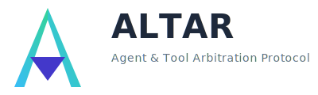

README
View Source
ALTAR Protocol
The Agent & Tool Arbitration Protocol
A comprehensive, language-agnostic, and transport-agnostic protocol designed to enable secure, observable, and stateful interoperability between autonomous agents, AI models, and traditional software systems.

Overview
ALTAR (The Agent & Tool Arbitration Protocol) establishes a new standard for how AI agents and software systems interact with tools. It follows a Host-Runtime architecture where a central Host process orchestrates communication between multiple Runtime processes, each offering specialized tools and capabilities.
This design ensures security, scalability, and observability are built-in, not bolted on.
%%{
init: {
'theme': 'base',
'themeVariables': {
'background': '#ffffff',
'primaryColor': '#f8fafc',
'primaryTextColor': '#1e293b',
'lineColor': '#64748b',
'secondaryColor': '#e2e8f0',
'tertiaryColor': '#f1f5f9',
'primaryBorderColor': '#e2e8f0',
'secondaryBorderColor': '#cbd5e1',
'tertiaryBorderColor': '#94a3b8'
}
}
}%%
graph LR
subgraph AE ["ALTAR Ecosystem"]
direction LR
style AE fill:#f8fafc,stroke:#e2e8f0
subgraph HL ["Host Layer"]
style HL fill:#f1f5f9,stroke:#cbd5e1,color:#475569
HOST[ALTAR Host]
style HOST fill:#4338ca,stroke:#3730a3,color:#ffffff,fontWeight:bold
end
subgraph RL ["Runtime Layer"]
style RL fill:#f1f5f9,stroke:#cbd5e1,color:#475569
RT1[Python Runtime]
RT2[Elixir Runtime]
RT3[Go Runtime]
style RT1 fill:#34d399,stroke:#25a274,color:#ffffff
style RT2 fill:#34d399,stroke:#25a274,color:#ffffff
style RT3 fill:#34d399,stroke:#25a274,color:#ffffff
end
subgraph CL ["Client Layer"]
style CL fill:#f1f5f9,stroke:#cbd5e1,color:#475569
AI[AI Agents]
APP[Applications]
style AI fill:#38bdf8,stroke:#2899c8,color:#ffffff
style APP fill:#38bdf8,stroke:#2899c8,color:#ffffff
end
end
AI --> HOST
APP --> HOST
HOST <--> RT1
HOST <--> RT2
HOST <--> RT3Key Features
- 🛡️ Secure by Default: The Host manages all tool contracts. Runtimes fulfill contracts, they don't define them, preventing "Trojan Horse" vulnerabilities.
- 🌐 Language & Transport Agnostic: Implement Runtimes in any language (Python, Go, Node.js, Elixir, etc.) and communicate over any transport (gRPC, WebSockets, TCP, etc.).
- ⚡ Developer-Friendly Workflow: A dual-mode system (
STRICTvs.DEVELOPMENT) provides a secure-by-default path for production while enabling rapid developer iteration. - 🔍 Built-in Observability: End-to-end tracing is a first-class feature, with
correlation_ids propagated through the entire call chain. - 📦 Stateful Sessions: Isolate context, state, and toolsets for different applications or users with first-class session management.
- 📈 Clear Compliance Levels: Adopt the protocol incrementally, from a minimal core implementation (Level 1) to a full enterprise-grade deployment (Level 3).
Project Status
The Altar Protocol specification is v1.0 complete and ready for implementation.
The design has been finalized, incorporating extensive feedback on security, developer experience, and enterprise requirements. The next phase is to build the reference implementations of the Host and Runtimes.
For full details on the final review, see docs/20250803_kiroSpecFinished_NextSteps.md.
Implementation Vision: The Elixir Host
The Altar protocol will be brought to life through a Canonical Elixir Host and a series of Lightweight Runtime SDKs for other languages. This "hub and spoke" model is a deliberate architectural choice that plays to the strengths of each technology.
1. The Canonical Host (This Repository)
The Altar Host is the complex orchestration engine responsible for session management, security, and message routing. Given these requirements, the canonical implementation of the Host is built in Elixir.
The BEAM and OTP provide the perfect foundation for this work, offering the world-class concurrency, fault-tolerance, and scalability required for a robust central orchestrator.
For Elixir developers, the Host is a simple library to be included in any application. You can get an enterprise-grade tool bridge running inside your existing Elixir application by adding Altar.Supervisor to your supervision tree.
2. Lightweight Runtime SDKs
For every other language (Python, Go, TypeScript, etc.), the goal is to provide a simple, idiomatic Runtime SDK. A developer wanting to expose their tools will only need to pip install altar-runtime, add a decorator to their functions, and point it at the central Elixir Host.
This strategy simplifies development and ensures that the core security and orchestration logic remains consistent and robust for the entire ecosystem.
Documentation
License
This project is licensed under the MIT License - see the LICENSE file for details.
The complete protocol specification can be found in the .kiro/specs/altar-protocol directory.
- Design Document: The core architecture, message schemas (IDL), and security model.
- Requirements Document: The detailed requirements and acceptance criteria.
- Implementation Plan: The task-by-task plan for building the reference implementation.